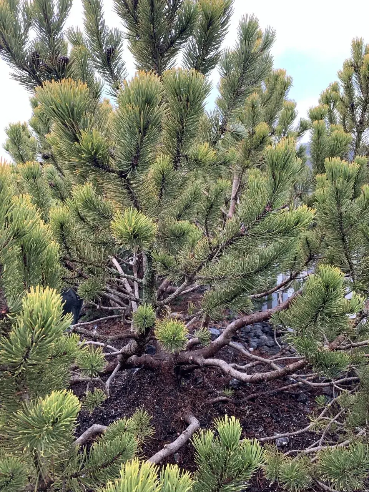

Чому я ріжу японськими ножицями.

Добре формування починається не зі швидкості, а з рішення, що дерево має нести в майбутньому. У Niwaki, формуванні сосни і японському догляді недостатньо швидко згладити зовнішній контур. Дерево - це не зелений блок, а жива система з крони, стовбура і коріння.
Електричний тример
Швидкий, широкий, механічний. Добрий для живоплоту, але ризиковий для цінного солітерного дерева: може рвати тонкий приріст і створювати щільну зовнішню кірку.
Японські ножиці
Повільніше, точніше, свідомо. Кожен зріз вирішує, яка брунька лишиться, куди зайде повітря і як хмара розвиватиметься наступного року.
Рвані волокна - не дрібниця. Дерево реагує на травму, закриває рани і перерозподіляє силу. Те, що в перший день виглядає рівно, може місяцями забирати енергію, якщо зріз був грубий, плаский або зроблений не в той момент.
Приклад Віктора: Taxus після електричних ножиць.
Нотатка Віктора до цих фото проста: це Taxus baccata після стрижки звичайними електричними ножицями. Ці два кадри показують технічну різницю: стирчать погано обрізані пагони, поверхня лишається неспокійною. При обрізці топіарними ножицями зріз всюди повний, чистий і рівномірний.
Це критична різниця. Електричні або бензинові ножиці швидко проходять по поверхні й зрізають багато пагонів у випадкових місцях. На Taxus після цього лишаються світлі пеньки, зім'яті кінчики і неспокійна поверхня: кущ ніби став коротшим, але форма не стала чистою. Ручними гострими топіарними ножицями я вирішую кожен зріз окремо, веду лінію рівно, бережу майбутні бруньки і не створюю травмовану механічну оболонку.
З японськими ножицями я працюю інакше. Я не просто відкриваю поверхню. Я шукаю внутрішню лінію: які пагони будують майбутнє, які дають тінь і де має зайти світло, щоб усередині не виникала суха деревина.

Зріз - це вказівка дереву.
Коли я залишаю бруньку, я кажу дереву: сюди можна давати силу. Коли прибираю гілку, я забираю можливість, яка росла роками. Тому моя фраза проста: зрізати гілку можна за секунду, а виростити нову - це роки.
Для клієнта це важливо, бо цінне садове дерево не є витратним матеріалом. Воно формує терасу, вид з дому і спокій саду. Найдешевший зріз часто стає найдорожчим, якщо руйнує форму.